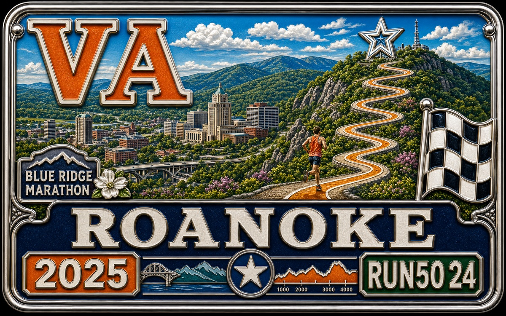
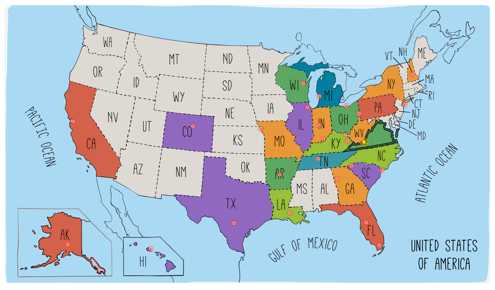

RUN50 DISPATCH · VIRGINIA
第24州 · 弗吉尼亚 · Blue Ridge Marathon
弗吉尼亚罗阿诺克 · 2025.04.12
Vlog 开场位｜Virginia
OPENING NOTE
America's Toughest Road Marathon，把马拉松跑成登山赛，也把蓝岭山脉的硬派风光跑进腿里。
本文速记
America's Toughest Road Marathon，把马拉松跑成登山赛，也把蓝岭山脉的硬派风光跑进腿里。

奖牌质感封面｜Virginia

第24州 · Roanoke
FIELD NOTE 01
阿巴拉契亚的暴力美学
前言
肯塔基周边的州，我已经快跑通关了。地图一摊开，东边只剩下一个和肯塔基“勉强肩膀挨着”的州：弗吉尼亚。
原本打算把它留给十月份的 海军陆战队马拉松（Marine Corps Marathon），顺便在华盛顿刷个存在感。

蓝岭山终点标识 @Arsenan
可惜那场比赛一票难求，报名费也不便宜，要 250 刀左右。而且华盛顿我自己早就跑过一回，对那场比赛也没有非跑不可的执念。
于是转头一搜弗吉尼亚的其他赛事，结果：Blue Ridge Marathon 直接闯进视野。

Roanoke 赛前街景 @Arsenan
名字早有耳闻，好像美国朋友也提过几次。
点进去一看，果然够硬：号称 “America’s Toughest Road Marathon”，全程累计上下落差 3,564 英尺。

赛前自助餐 @Arsenan
这不是都市里的观光马，而是阿巴拉契亚山脉里的硬仗。风光粗粝，山路蜿蜒，膝盖悲鸣。
和《英雄本色》带给我的感觉一样，透着一股 山道上的硬派气质。正是这种硬杠的对抗，让人跑到最后，还能咧嘴一笑。

进山路上的钢桥 @Arsenan
这也许就是我想要的跑者版 暴力美学。
FIELD NOTE 02
殖民地起点与蓝岭山脉
第24州 · 弗吉尼亚
弗吉尼亚（Virginia）是美国最早的殖民地之一，名字源自英国女王 伊丽莎白一世。她终身未婚，被称作 “处女王（The Virgin Queen）”，因此这里被命名为“Virginia”，意为“女王的领地”。

山间雾路 @Arsenan
1607 年，英国人在这里建立了北美第一个永久殖民地，詹姆斯敦（Jamestown），美国历史算是从这片土地开篇。
地理上，弗吉尼亚离美国首都 华盛顿特区 很近。首都最初就是从弗吉尼亚和马里兰各划一块地建成的，所以有人说美国的政治心脏就是从这里“切出来的”。

弗吉尼亚导航 @Arsenan
它横跨海岸和山脉：东边临大西洋和切萨皮克湾，西边就是连绵的 阿巴拉契亚山脉 和蓝岭山。地貌多样，从海滩到丘陵再到群山，几乎囊括了美国东部的所有风景。
说到城市：

Roanoke 天际线 @Arsenan
里士满（Richmond） 是州府，也是南北战争时期的南方邦联首都，历史底蕴浓厚。
弗吉尼亚海滩（Virginia Beach） 是度假胜地，沙滩和木栈道闻名。

蓝岭山雾气 @Arsenan
夏洛茨维尔（Charlottesville） 有弗吉尼亚大学，由杰斐逊亲手设计，学术氛围很浓。
罗阿诺克（Roanoke） 位于蓝岭山谷，是铁路重镇，因为山上的巨大 罗阿诺克之星 而出名，也是这次 Blue Ridge Marathon 的举办地。

市中心壁画楼 @Arsenan
弗吉尼亚常被称作 “总统之母”，因为八位美国总统都出生在这里，包括华盛顿和杰斐逊。它既是美国历史的开端，又是自然风光的浓缩。
对我来说，这次的重点不是殖民地历史，而是亲身在阿巴拉契亚山脉里，感受一把 全美最虐赛道的厉害。

清晨街道 @Arsenan
FIELD NOTE 03
出发去弗吉尼亚
Chapter 1
新年新气象，我也终于换了新车。
从那辆老尼桑 Altima 升级成带自动驾驶的 特斯拉 Model Y，生活质量直接上了一个台阶。第一次开电车长途，心里多少有点紧张，但更多是兴奋。

起点自拍 @Arsenan
出发那天是四月中旬，小雨淅沥，天空阴沉，空气里飘着一股春末的潮意。路边的树刚发新芽，嫩绿中夹着紫红的花，一路层层叠叠。开着特斯拉，启用自动驾驶，看着《乘风破浪的姐姐》，那一刻有点惬意。
车自己规划充电站，完美契合我的“尿点”。所谓“人车双充”，行程被拆成几个自然的片段，不再那么赶，也不再那么疲劳。电车出行的节奏，竟然有点像修行，科技让人慢下来，但更自在。

补给站 @Arsenan
中午我们在一个路过的小城停留，城市叫 Charleston（查尔斯顿），其实已经是西弗吉尼亚的州府了。
我们在城中心找了家印度自助餐馆，菜不算惊艳，但老板特别健谈，一边加饭一边问我们从哪来、要去哪。

爬坡前的砂石路 @Arsenan
吃饱上路，继续往东。
在高架路上，特斯拉的 FSD（完全自动驾驶）显然还不太擅长应付这种上下交织的多层立体路网，时不时会“迷路”。

Roanoke Star 合影 @Arsenan
Siqi 只好手动接管，把它从错道拉回来。穿过一座黄蓝相间的钢桥，那是横跨卡诺瓦河（Kanawha River）的 Fort Hill Bridge，铁架的线条在雾气中像一张巨大的蜘蛛网。远处的山被薄雾笼罩，山脚的小镇房屋一排排散落在绿坡上，像贴在阿巴拉契亚山脉腰间的补丁。
路越来越窄，山越来越高。

赛道旁砖楼 @Arsenan
七个多小时的路程后，我们终于抵达目的地：Roanoke（罗阿诺克）。
这座城市坐落在蓝岭山谷之间，人口不到十万，安静干净。过去它是铁路重镇，如今则以户外运动和艺术气息闻名。刚把车停进市中心停车场，一抬头，就看到整栋楼的巨型壁画：一个攀岩者伸手抓岩，背景是云和群山，底下写着：“Freedom First.”

终点瞬间 · 赛事摄影
在阴雨天里，这画面莫名有力量。也许，这正是这座山城的精神，自由、倔强、往上爬。
继续往前，就是 Elmwood Park，马拉松的 expo 就在这儿。

冲线瞬间 · 赛事摄影
雨还没停，公园里支着几顶帐篷，志愿者在发号布和 T 恤。那件蓝色的纪念衫上印着一条蜿蜒的等高线，配着一句大写口号：
“America’s Toughest Road Marathon.”，全美最艰难的路跑。

空荡终点通道 @Arsenan
有种“我知道你要死，但你还得上”的气势。
领完装备，我们开到旅馆。

Roanoke 终点拱门 @Arsenan
这次特意选了能给特斯拉充电的酒店，算是彻底告别“电量焦虑”。窗外雨还在下，山城的夜景映在玻璃上，灯光被打碎成一片片蓝色的光斑。
FIELD NOTE 04
当马拉松遇上登山赛
第二章
第二天一早，我们开进 Roanoke 市区。天刚蒙蒙亮，天边有一抹金黄的火烧云，从云层里一点点冒出来，照在街头的老建筑上，有点浪漫。

终点区距离牌 @Arsenan
马路宽阔、干净，两边的红砖小楼错落着，城市虽小，却透着一股“山里精致”的气息。
我们在起点附近找了个停车场，四月的早晨，山里的风还带着点湿气。

蓝岭山奖牌 · 赛事摄影
起点设在 Downtown Roanoke，街头有老式的招牌，也有现代的咖啡馆。

终点挥手 · 赛事摄影
我们还认识了一位来自 阿拉斯加的跑步阿姨，她是这次的 pacer，穿着橙色的纪念衫，戴着帽子、笑得特别开朗。
我看她冻得直抖，干脆把我的外套给了她，顺便还和 Siqi 加了好友。

蓝岭山奖牌近照 · 赛事摄影
起跑拱门上挂着一句话：
> “I don’t know how to put this, but you’re kind of a big deal.”

赛后市中心放松 @Arsenan
>
>

街角奖牌照 @Arsenan
> （我不知道该怎么说，但你确实挺了不起的。）
>

阳光奖牌照 @Arsenan
随着音乐响起，人群沸腾，我们也正式冲出起点。
桥上光影交织，云层翻滚，感觉自己像是在冲进一幅会动的画。

奖牌照 @Arsenan
没多久，城市景色渐渐褪去，取而代之的是山林。
我们进入了著名的 Mill Mountain Park ，这里连着 Blue Ridge Parkway（蓝岭公路），也是整个比赛的灵魂地段。

Post race @Arsenan
阳光从树梢间透下来，斑驳的光影落在地面上，空气清冽得像刚拧开的矿泉水。
但美景背后，是噩梦级的上坡。

山路风景 @Arsenan
前 3 英里几乎全是爬升。坡度不算陡，但绵延不断。
路边有个穿着 *Sergio Ramos* 球衣的哥们，

路上风景 @Arsenan
三英里处有个补给站，他们举着水杯在风里抖，嘴里大喊 “You got this！”
再往前跑，树越来越密，

落日时分 @Arsenan
大约到第六英里，坡度再次拉满，这段爬坡窄到只能两人并行。
我开始用走的，抬头能看到树梢和一线蓝天。

山路转弯 @Arsenan
终于，在气喘吁吁中，迎来了山顶：
山顶有个观景点叫 View Mill Mountain，海拔 1750 英尺。

山顶视野 @Arsenan
这里的视野突然开阔：远处的山脊一层层铺开，
绿色的山林在雾气里泛出淡淡的蓝光：

路边远景 @Arsenan
原来这就是“Blue Ridge”的由来。
不是颜色滤镜，而是大自然给的朦胧蓝。

Toll booths @Arsenan
拍照、喘气、喝口水，下坡确实没想象的轻松。
陡坡考验的不只是腿力，还有勇气。

车窗风景 @Arsenan
重心太靠前容易滚下山，太靠后又像在刹车。
但也正是这种又虐又美的组合，让人觉得有意思。

城市街景 @Arsenan
FIELD NOTE 05
冲向蓝岭之星
第三章
下坡路上，我又遇到了那位来自阿拉斯加的跑步阿姨。
她远远地朝我招手，笑得比阳光还灿烂。

前方长路 @Arsenan
我赶紧回应了一下，她后来特意发信息高速 Siqi，说自己把那件外套转送给了另一位冷得发抖的跑者。
温暖，也在接力。

转场路上 @Arsenan
没多久就到了 10 英里处的里程牌，牌子上印着一张照片：Smith Mountain Lake（史密斯山湖）。
那是弗吉尼亚州最有名的湖泊之一，被称作“蓝岭的眼睛”。

林间山路 @Arsenan
继续往前跑，森林的气息越来越浓。
路面从柏油变成碎石，我们进入了 Mill Mountain Star Trail（米尔山星形步道）：这是比赛的标志段，也是所有跑者都会记住的地方。

路上自拍 @Arsenan
终于，转过一个弯，一片开阔地映入眼帘：
那就是 Roanoke Star（罗阿诺克之星）。

街角一幕 @Arsenan
这颗巨大的钢结构五角星高达 27 米，建于 1949 年，最初是为了圣诞节装饰，但人们太喜欢它了，就一直留到了现在。
夜晚它会点亮，成为蓝岭山谷的“灯塔”。

市中心路口 @Arsenan
在美国，这颗星被称作“世界上最大的独立照明星”。
它不仅是地标，更是城市精神的象征，在群山之间，也要发光。

赛道旁砖楼 · 2 @Arsenan
我在志愿者的帮助下拍了张照片，
背景是银白色的钢架和阴天的云层，

起点现场 @Arsenan
在星星旁的观景台上，我往下望：
整个 Roanoke 城市就在脚下铺开。

起点人群 @Arsenan
近处是绿意盎然的树林，
中间是稀疏的高楼和金色的圆顶，

赛前街道 @Arsenan
再远处，是连绵起伏的蓝岭群山，
天气阴阴的，没有刺眼阳光，空气凉凉的，跑起来异常舒服。

赛道跑者 @Arsenan
当我重新回到柏油路上，两边的树逐渐让位给民居区，斑驳的木屋、粉白的花树、翠绿的草地，构成了一幅山脚小镇的春天画卷。
这一带叫 South Roanoke Neighborhood，

路上跑者 @Arsenan
是全市最漂亮的社区之一，房子都建在起伏的小丘上，
庭院里种满了樱花和杜鹃。

路上风景 · 6 @Arsenan
接着我钻进了一个桥洞，墙上是一整面的彩绘壁画，
是一位女子的侧脸，表情温柔，眼前停着一只蜻蜓。

路上风景 · 7 @Arsenan
那是当地艺术家的作品，代表 Roanoke 的自然与生命力。
出了桥洞，就是河边路段。

下坡路段 @Arsenan
这条河叫 Roanoke River（罗阿诺克河），
全长 410 英里，从阿巴拉契亚山脉一路蜿蜒入海，

路边标识 @Arsenan
贯穿了城市，也贯穿了这场比赛。
这一段河畔小径平缓、开阔，风带着水汽拂面，

英里牌 @Arsenan
我被一群光着膀子的肌肉青年超了过去，
折返点不远，16 英里。

补给桌前 @Arsenan
再穿过那幅大壁画，又回到了城市。
这段路上还能看到一个橄榄球场，

路上风景 · 8 @Arsenan
那是 River’s Edge Sports Complex，
一个社区体育中心，蓝色的隧道上写着醒目的白字。

Volunteers in @Arsenan
跑过它，就像穿过一个传送门，
回到了喧嚣之外、宁静之中。

路边竖起大拇指 @Arsenan
FIELD NOTE 06
老工业城的最后冲刺
第四章
过了 18 英里，又开始上坡。
这一段在山脚的社区里，房子多了，人气也比山上旺。

路上风景 · 9 @Arsenan
爬坡不算陡，但拖得久，快到 20 英里 时终于爬到顶，
下山回到市区，穿过铁桥和铁路。

Dark trees @Arsenan
下面就是那条 Roanoke River（罗阿诺克河），
两旁是旧铁轨和集装箱，橙色、黑色、灰色一排排，

Wide Roanoke @Arsenan
这座城市当年就是靠铁路起家的。
火车的鸣笛声混着风声，有种老工业城特有的味道。

里程标识 @Arsenan
24 英里，离终点只剩两英里。
街边的观众越来越多，小区居民站在门口挥手加油，

山城远景 @Arsenan
这段气氛真好，跑起来也顺多了。

山路风景 · 7 @Arsenan
最后一英里回到主城区，路边开始有警察维持交通。
我看到 26 英里的牌子，深呼吸，举起双臂，冲线。

Sunlit descent @Arsenan
摄影师刚好拍下那一刻，
我腰包鼓鼓的，赘肉也没藏住，不过都不重要。

路边英里牌 @Arsenan
四小时五十出头，完赛。
在这条被称为 “America’s Toughest Road Marathon” 的赛道上，

后半程英里牌 @Arsenan
能跑完，就是胜利。终点发的奖牌设计很直接：
深蓝底色，彩色山峰，底下印着醒目的那句话：

志愿者补给 @Arsenan
“America’s Toughest Road Marathon.”
简洁干净，不多花哨，但挺有力量。

路上自拍 · 2 @Arsenan
我和 Siqi 拿着各自的奖牌合了影，
她跑半马，我跑全马，然后我们就在回车的路上拍了几个照片，

山路风景 · 8 @Arsenan
回程的路上，天放晴了。山还是蓝的，云也散开。
我们在列克星敦吃了顿中餐，有点油，有点咸，

爬坡前的砂石路 · 2 @Arsenan
非常种熟悉的味道。
吃完上车，离到家就不到一个小时了。

Roanoke Star 合影 · 2 @Arsenan
FIELD NOTE 07
在暴力与平衡之间
后记
回想整场比赛，脑子里还残留着那些画面：
山坡上喘着粗气的声音、下坡时风拍在脸上的凉意、

Roanoke Star 合影 · 3 @Arsenan
居民在门口举牌子的笑脸，还有那段铁轨边的火车鸣笛。
3,500 多英尺的上下爬升，在马拉松界已经接近“暴力”的级别。

山路风景 · 9 @Arsenan
肌肉被反复拉扯、呼吸不断变重，
可越是在这种“虐”的过程里，越能感受到身体的力量在被重新点燃。

路上风景 · 10 @Arsenan
科学上，这种感觉确实有解释。
当身体在长时间高强度运动中被“逼近极限”，

路上风景 · 11 @Arsenan
大脑会释放出一类叫 内啡肽（endorphins） 的物质。
它能抑制疼痛，让人感到愉悦：也就是俗称的 “跑者高潮（runner’s high）”。

Bike marshal @Arsenan
简单说，就是越累，越快乐。身体越疼，反而越能感受到活着。
但这种快感不是无止境的。如果太极端，就会崩塌。就像生活一样，跑步是一种平衡的艺术：

山路风景 · 10 @Arsenan
你得在“痛”和“爽”之间，
在“坚持”和“顺其自然”之间找到那个点。我常在想，太极讲阴阳平衡，宇宙也在追求均衡：

山路风景 · 11 @Arsenan
行星的轨道、昼夜的更替、生与死的循环。
也许人类的幸福，也来自这种“自我平衡”的能力。

转弯跑者 @Arsenan
不是一味地冲刺，也不是一直停下，
而是学会在变化中找到属于自己的节奏。

路上风景 · 12 @Arsenan
第 24 个州，我在这场暴力美学的爬升里，
竟然意外地找到了那种平衡。

路上自拍 · 3 @Arsenan
身体在山坡上被掏空，
但心却在某一刻变得安静。

关键里程 @Arsenan
未来的路，还会继续延伸。
或许人生就是一场漫长的上坡下坡，

山路风景 · 12 @Arsenan
而我想学会的，就是在不平衡的世界里，找到属于自己的平衡。
RUN50 FINISH LINE
这一站，收进地图。
蓝岭山这一跑不像普通城市马，更像一次把腿借给山路的旅行。痛是真的，风景也是真的。
24
RUN50
3,564 ft
MARK
CLIMB
NOTE
爬坡赛道很公平，它不会跟你讲道理，只会一点点把腿里的存货掏出来。你跑过最狠的坡在哪儿？我很想知道大家都是在哪一段被教育的。
文字 / 编辑 / 排版 · Arsenan